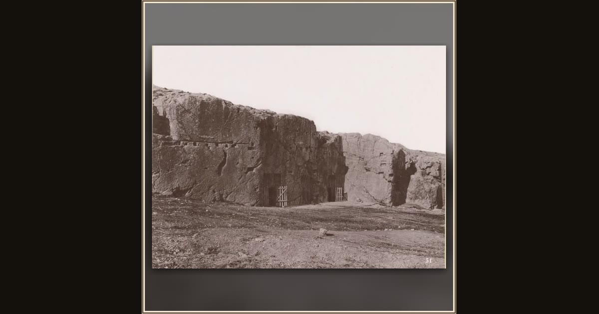

Gevangenis van Socrates in Athene
anonymous · c. 1890 - 1895 · rijksmuseum
A collotype shows rock-cut chambers in Athens labelled by the museum as Socrates' prison; in this passage Crito enters Socrates' prison before dawn with the watchman's help. (43a) Explore its place in Plato's Dialogues, Crito, section 1.